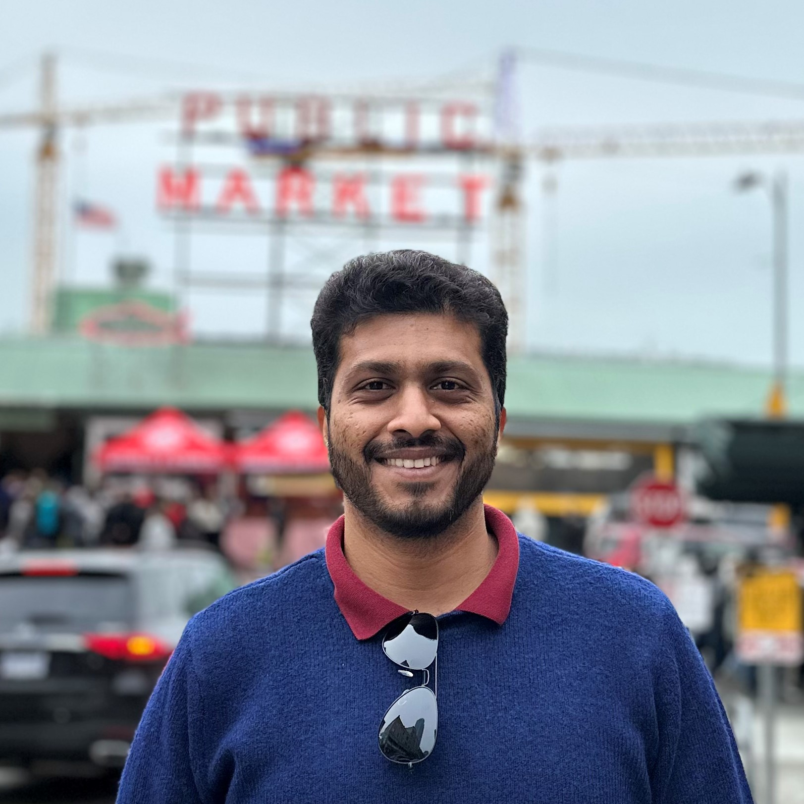
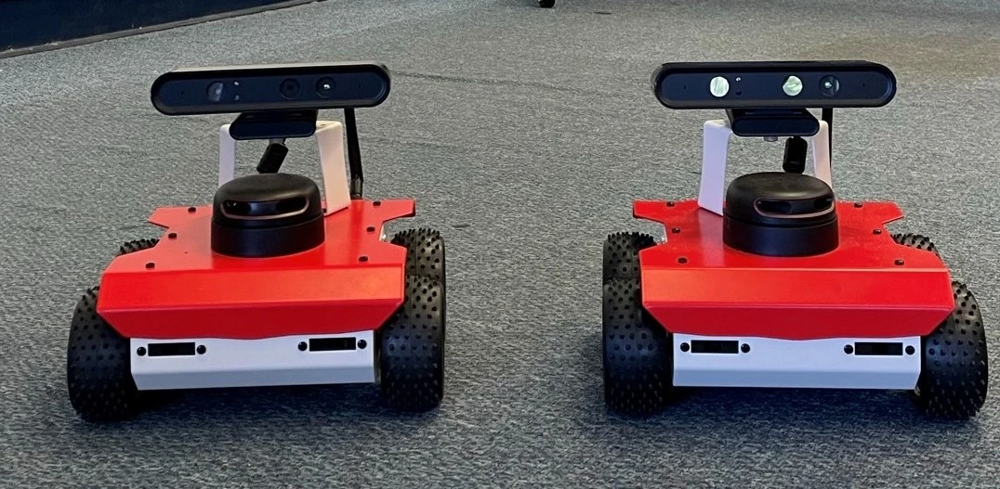
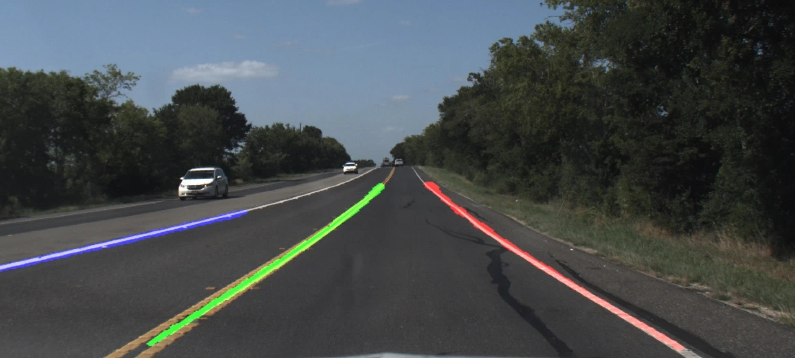
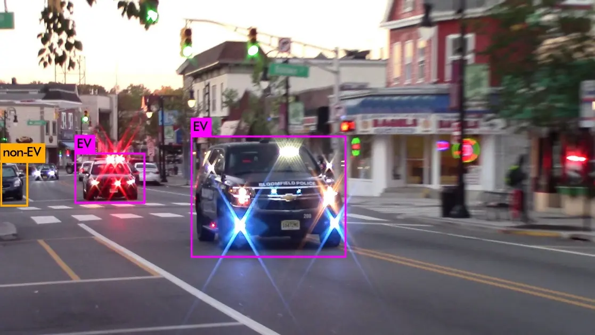
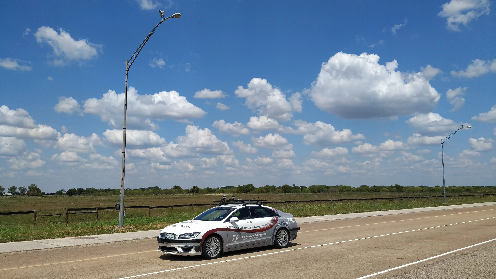
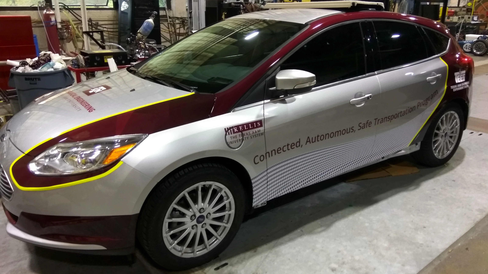

Portfolio
Senior Software Engineer · MathWorks
Ph.D. in Mechanical Engineering from Texas A&M University, with deep expertise in motion planning, perception, and machine learning for self-driving vehicles, UAVs, and indoor robots. My research has produced 8+ peer-reviewed publications and 100+ citations, with work spanning multi-agent path planning, computer vision for ADAS, and infrastructure-enabled autonomy. Currently working as a Senior Software Engineer at MathWorks, where I bring rigorous research thinking to production-grade software development.

Expertise
Career
The MathWorks Inc.
Natick, Massachusetts
Joulea Inc.
Atlanta, Georgia
Texas A&M Transportation Institute (TTI)
College Station, Texas
Texas A&M Engineering Experiment Station
College Station, Texas
TVS Motor Company
Hosur, TN, India
Academic
My research focuses on developing advanced algorithms and machine learning models for self-driving vehicles, indoor robots, and aerial vehicles — improving their motion planning, perception, decision-making, and navigation capabilities.
Manyam, S. G., Nayak, A., & Rathinam, S. — G* A New Approach to Bounding Curvature Constrained Shortest Paths through Dubins Gates
Robotics: Science and Systems, 2023
PDFNayak, A., & Rathinam, S. — Heuristics and Learning Models for Dubins MinMax Traveling Salesman Problem
Sensors 2023, 23(14), 6432
PDFNayak, A., Pike, A., & Rathinam, S. — Effect of Pavement Markings on Machine Vision Used in ADAS Functions
SAE Technical Paper 2022-01-0154
PDFHari, S. K. K., Nayak, A., & Rathinam, S. — An Approximation Algorithm for a Task Allocation, Sequencing and Scheduling Problem Involving a Human-Robot Team
IEEE Robotics and Automation Letters, vol. 5, no. 2, April 2020
PDFNayak, A., Rathinam, S., Pike, A., & Gopalswamy, S. — Reference Test System for Machine Vision Used for ADAS Functions
SAE Technical Paper 2020-01-0096
PDFRavipati, D., Chour, K., Nayak, A., et al. — Vision Based Localization for Infrastructure Enabled Autonomy
IEEE ITSC 2019, Auckland, New Zealand
PDFNayak, A., Gopalswamy, S., & Rathinam, S. — Vision-Based Techniques for Identifying Emergency Vehicles
SAE Technical Paper 2019-01-0889
PDFNayak, A., Chour, K., Marr, T., et al. — A Distributed Hybrid Hardware-in-the-Loop Simulation Framework for Infrastructure Enabled Autonomy
arXiv preprint arXiv:1802.01787, 2018
PDFSafe-D Webinar on Reference Machine Vision for ADAS Functions
College Station, TX · Oct 2021Safe-D UTC Graduate Student Leadership Development Seminar Series
College Station, TX · Oct 2019Texas Mobility Summit
Arlington, TX · Oct 2018Seminar on Intelligent Transportation Systems, NITK
Surathkal, India · Feb 2014Work




A distributed intelligence architecture for Connected Autonomous Vehicles (CAV) by offloading computation to infrastructure.

A low-cost drive-by-wire system to control a Ford Focus via sensor emulation using Arduino Mega.
Academic Background
Texas A&M University, College Station, TX
Texas A&M University, College Station, TX
National Institute of Technology Karnataka (NITK), India
Credentials
Coursera · Apr 2022
Coursera · Sep 2020
CADD Centre · Aug 2015